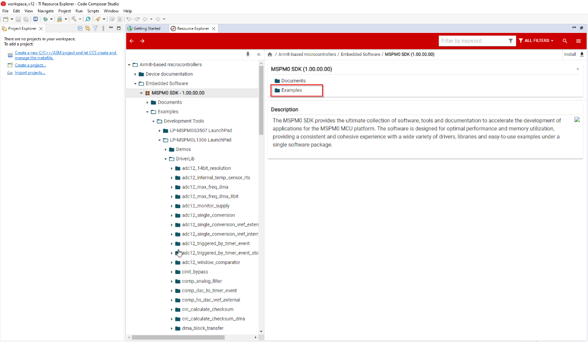
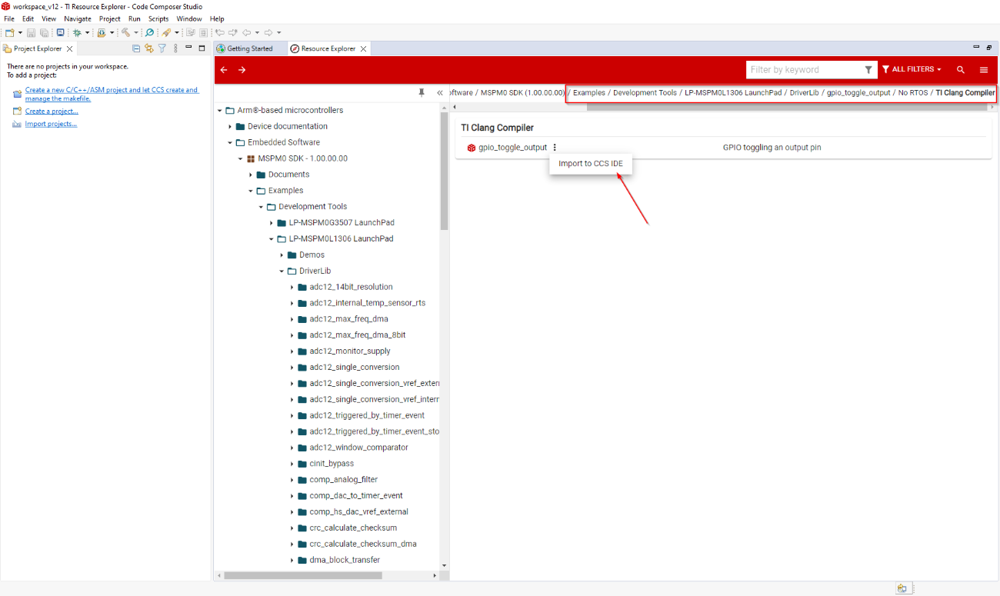
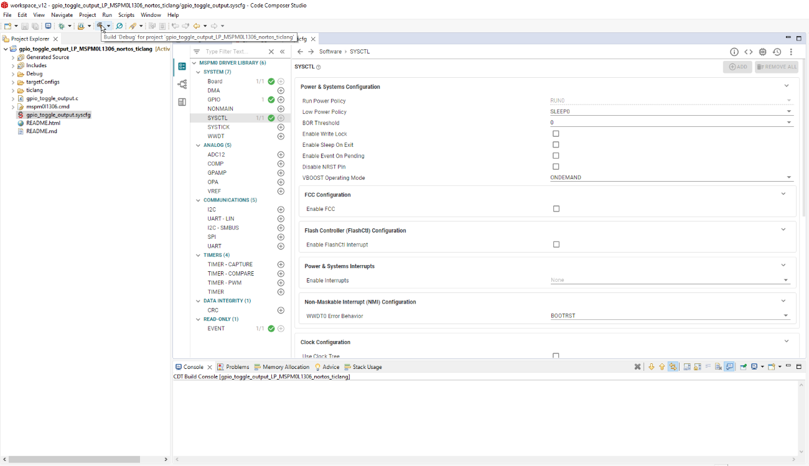

适用于 CCS 的 MSPM0 SDK 快速入门指南¶
1. 简介¶
本指南旨在帮助用户进行初始设置并演示如何使用 TI Arm Clang 在 CCS 中运行他们的第一个 MSPM0应用程序。 本指南不用于解释 CCS 的功能。 请参阅 CCS 中的帮助菜单提供的文档，或者参考MSPM0 SDK 文档中的 CCS IDE Guide for MSPM0 MCU。
2. 前期准备¶
用户应已下载以下内容：
-
注：此版本包括对 MSPM0量产型号的支持，不支持早期的实验型号。
SysConfig 1.20.x (包含在最新版本的 CCS 中)
TI Clang 3.2.1.LTS (包含在最新版本的 CCS 中)
3. 在 CCS 中导入和构建示例¶
在 CCS 中从入门页面打开 Resource Explorer

在 PAGE 目录中选择 MSPM0并选择 Examples 文件夹
 在下面的文件路径之后导航到 DriverLib 示例

选择一个示例，选择 TI Clang 编译器文件夹，然后通过点击项目文件旁边的3个点来导入到 CCS IDE 中
 如果未安装 SDK，将弹出一条错误消息并提示用户安装 SDK

安装 SDK 后，通过点击项目文件旁边的3个点将其导入到 CCS IDE 中
编译样例程序，请在 Project Explorer 选项卡中单击您的样例程序，然后选择顶部的 Build 图标。
注一些样例程序包括对 SysConfig 的支持，以便更简单直观地进行配置 下图还显示了用于为样例程序工程配置器件的 SysConfig 文件 有关支持 SysConfig 的完整样例程序列表，请查看 MSPM0 SDK Examples Guide。有关基于MSPM0使用 SysConfig的更多一般信息，请参阅 SDK 工具指南中提供的 Using SysConfig with MSPM0。
4. 已知问题和常见问题解答(FAQ)¶
请参阅 SDK 内部的 Known Issues and FAQ。